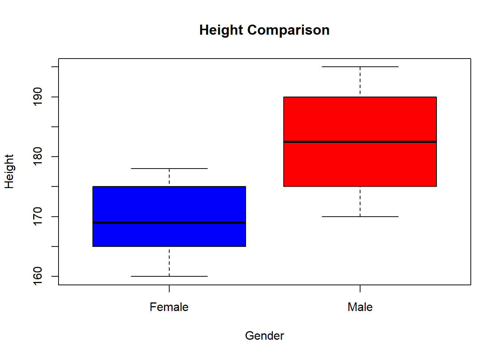

Chapter 6 Explanatory Data Analysis
6.1 Introduction to EDA
Exploratory Data Analysis (EDA) is a critical process in the data analysis workflow. It involves examining and visualizing a dataset to uncover patterns, spot anomalies, test hypotheses, and check assumptions using summary statistics and graphical representations. EDA provides a solid understanding of the data and lays the foundation for more advanced statistical analyses or machine learning models.
The key objectives of EDA are;-
- Understand and familiarize the data structure.
- Detect outliers and anomalies.
- Identify patterns and trends.
- Check and verify assumptions, etc.
By performing EDA thoroughly, the groundwork is laid for more accurate results, ultimately provides insights that lead to better decision-making. EDA also guides to better model-selection.
Here are the common techniques involved in EDA;-
- Summary Statistics: The analysts compute the summary statistics like mean, median, mode and standard deviation to find the spread and central tendency in the data.
- Data Visualization: Charts and graphs are drawn to provide a visual interpretation of the data set.
- Data Cleaning and Preparation: Data manipulation and pre-processing is done to reduce the risk of misinterpretation.
There are more EDA techniques like univariate, bivariate and multivariate analysis, and inferential statistics.
6.2 Choosing a data set
You are required to select a data set from the list below and perform EDA;
- MBA Admission dataset, Class 2025 - download here
- Global Black Money Transactions Dataset - download here
- Crop Yield Prediction Dataset - download here
- ChickWeight inbuilt R dataset - load from the command
data("ChickWeight") - Seatbelts data set - load from the command
data("Seatbelts") - The “Groceries” from the R package comes
arules- Load the data by first importing arules(library(arules)) then the data bydata("Groceries") "CreditCard"data from packageAER- Load the data by first importing AER (library(AER)) then the data bydata("CreditCard")
Outline the questions to explore during EDA based on the Data set you have chosen
6.3 Conducting EDA
You will use the skills acquired in this camp(especially dplyr and ggplot2) to;
- Explore the data set structure
- Visualize the relationship between variables
- Summarize key findings
6.4 Present Findings
Finally, you will prepare a brief presentation of your findings ,and discuss on the insights obtained and the techniques used.
6.5 EDA - Example
This is just an example on how to explore EDA. Download the Ecommerce data set from here
6.5.1 Introduction
This eCommerce dataset contains transaction-level information, including customer demographics (e.g., age, gender), purchase details (e.g., product category, payment method), and discount information. It captures both gross and net amounts, helping to analyze the impact of discounts and customer behavior across different locations. This data set provides insights into customer spending patterns and promotional effectiveness
6.5.2 Data Assessment and Cleaning
Load the necessary data sets and libraries
# Load the libraries
library(dplyr)
library(ggplot2)
# Load the data
ecommerce <- read.csv("data/ecommerce.csv")Show the first five rows
## CID TID Gender Age.Group Purchase.Date Product.Category
## 1 943146 5876328741 Female 25-45 30/08/2023 20:27:08 Electronics
## 2 180079 1018503182 Male 25-45 23/02/2024 09:33:46 Electronics
## 3 337580 3814082218 Other 60 and above 06/03/2022 09:09:50 Clothing
## 4 180333 1395204173 Other 60 and above 04/11/2020 04:41:57 Sports & Fitness
## 5 447553 8009390577 Male 18-25 31/05/2022 17:00:32 Sports & Fitness
## 6 200614 3994452858 Male 18-25 12/07/2021 15:10:27 Clothing
## Discount.Availed Discount.Name Discount.Amount..INR. Gross.Amount
## 1 Yes FESTIVE50 64.30 725.304
## 2 Yes SEASONALOFFER21 175.19 4638.992
## 3 Yes SEASONALOFFER21 211.54 1986.373
## 4 No 0.00 5695.613
## 5 Yes WELCOME5 439.92 2292.651
## 6 Yes FESTIVE50 127.01 3649.397
## Net.Amount Purchase.Method Location
## 1 661.004 Credit Card Ahmedabad
## 2 4463.802 Credit Card Bangalore
## 3 1774.833 Credit Card Delhi
## 4 5695.613 Debit Card Delhi
## 5 1852.731 Credit Card Delhi
## 6 3522.387 Credit Card DelhiThe data set features/columns and the shape of the data set
## [1] "CID" "TID" "Gender"
## [4] "Age.Group" "Purchase.Date" "Product.Category"
## [7] "Discount.Availed" "Discount.Name" "Discount.Amount..INR."
## [10] "Gross.Amount" "Net.Amount" "Purchase.Method"
## [13] "Location"## [1] 55000 13There are 55000 observations and 13 features/columns in the data set. Lets now find the data types of the columns’
## 'data.frame': 300 obs. of 3 variables:
## $ category : chr "A" "A" "A" "A" ...
## $ sub_category: chr "X" "X" "X" "X" ...
## $ value : num 8.85 6.14 11.33 6.79 7.29 ...There are 5 numeric columns and 8 non numeric columns.
Find and count the null values in the data set
## [1] 0The data set is complete with no missing values. Lets now find if there are any duplicated records
## [1] 0There are no duplicated records
Calculate the summary statistics
## CID TID Gender Age.Group
## Min. :100009 Min. :1.000e+09 Length:55000 Length:55000
## 1st Qu.:323717 1st Qu.:3.253e+09 Class :character Class :character
## Median :550088 Median :5.498e+09 Mode :character Mode :character
## Mean :551246 Mean :5.505e+09
## 3rd Qu.:776956 3rd Qu.:7.748e+09
## Max. :999996 Max. :9.999e+09
## Purchase.Date Product.Category Discount.Availed Discount.Name
## Length:55000 Length:55000 Length:55000 Length:55000
## Class :character Class :character Class :character Class :character
## Mode :character Mode :character Mode :character Mode :character
##
##
##
## Discount.Amount..INR. Gross.Amount Net.Amount Purchase.Method
## Min. : 0.0 Min. : 136.5 Min. :-351.1 Length:55000
## 1st Qu.: 0.0 1st Qu.:1562.1 1st Qu.:1429.6 Class :character
## Median : 0.0 Median :2954.3 Median :2814.9 Mode :character
## Mean :137.0 Mean :3012.9 Mean :2875.9
## 3rd Qu.:274.1 3rd Qu.:4342.2 3rd Qu.:4211.4
## Max. :500.0 Max. :8394.8 Max. :8394.8
## Location
## Length:55000
## Class :character
## Mode :character
##
##
## 6.5.3 Data Visualization
The relationship between the discount amount and the gross amount using a scatter plot
# Create a scatter plot
ggplot(ecommerce, # data
aes(x = Gross.Amount, y = Discount.Amount..INR.)) + # aesthetics
geom_point() +
labs(
title="The relationship between Gross Amount and Discount",
y="Discount Amount",
x="Gross Amount"
)There is no clear relationship between the discount amount and the gross amount
The average discount per product category
discount_per_category <- ecommerce %>%
select(Product.Category, Discount.Amount..INR.) %>%
group_by(Product.Category) %>%
summarise(Average.Discount=mean(Discount.Amount..INR.))
discount_per_category## # A tibble: 9 × 2
## Product.Category Average.Discount
## <chr> <dbl>
## 1 Beauty and Health 136.
## 2 Books 137.
## 3 Clothing 138.
## 4 Electronics 136.
## 5 Home & Kitchen 139.
## 6 Other 139.
## 7 Pet Care 134.
## 8 Sports & Fitness 136.
## 9 Toys & Games 139.Plot the data on a bar chart
# Create a bar chart
ggplot(discount_per_category, aes(x = Product.Category, y = Average.Discount)) +
geom_bar(stat = "identity") +
labs(title = "Average discount per the product category",
x = "Product Category",
y = "Average Discount") +
theme_classic()
The average discount was almost equal for all the categories
Count the purchases by purchase method
purchase_method_count <- ecommerce %>%
group_by(Purchase.Method)%>%
summarize(Count=n())
purchase_method_count## # A tibble: 8 × 2
## Purchase.Method Count
## <chr> <int>
## 1 Cash on Delivery 2768
## 2 Credit Card 22096
## 3 Debit Card 13809
## 4 Google Pay UPI 2670
## 5 International Card 2815
## 6 Net Banking 5485
## 7 Paytm UPI 2674
## 8 PhonePe UPI 2683Display on a bar chart
# Create a bar chart
ggplot(purchase_method_count, aes(x = Purchase.Method, y = Count)) +
geom_bar(stat = "identity") +
labs(title = "Count of purchases by purchase method",
x = "Purchase Method",
y = "Count") +
theme_classic()Most customers purchased goods by credit and debit cards.
Show the net amount distribution by histogram
# Create a histogram
ggplot(ecommerce, aes(x = Net.Amount)) +
geom_histogram(bins = 8, fill = "blue", color = "black") +
labs(title = "Distribution of Net Amount",
x = "Net Amount",
y = "frequency") +
theme_minimal() Most products range from 1000 to 4000 Indian Rupees
Most products range from 1000 to 4000 Indian Rupees
Find out the different age groups
## [1] "25-45" "60 and above" "18-25" "45-60" "under 18"There are five different age groups, lets inspect their spending characteristics on the eCommerce site using box plots
# Plot a box plot
ggplot(ecommerce,
aes(x=Age.Group, y=Gross.Amount, fill = Age.Group))+
geom_boxplot() +
labs(title="Spending based on different age groups",
x = "Age groups",
y = "Gross Amount") +
theme_classic()
There was no clear difference between the spending patterns based on the age groups
6.5.4 Key Findings
These were the key findings that were discovered;
- The amount spend on purchase and the category of product purchased had no effect on the discount given.
- Most of the customers find it easy using their credit and debit cards. This may be due to low fees imposed , transaction speeds, not adopted alternatives methods, or the popularity of these cards when purchasing.
- There was no clear difference between the spending patterns based on the age groups.